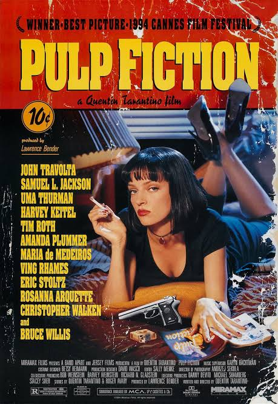

Atividade apresentando um filme dos anos 80 ou 90. E o escolhido foi o "Pulp Fiction"

Dirigido por Quentin Tarantino, Pulp Fiction: Tempo de Violência é um clássico moderno que entrelaça as vidas de criminosos, assassinos de aluguel e figuras marginais de Los Angeles por meio de diálogos icônicos, humor ácido e uma estrutura não linear. Em vez de uma história contínua, o filme acompanha momentos marcantes da rotina de personagens como dois capangas filosóficos, a enigmática esposa de um chefão do crime e um boxeador em fuga, explorando o submundo do crime com muito estilo, ironia e uma trilha sonora lendária.
O filme em si é muito bom, tanto quanto a cinematografia quanto a trilha sonora, as atuações, tudo nesse filme é bom. E um dos motivos pelo qual eu o assistir, foi por causa do meu youtuber favoritos "Gemaplys" e pelas referencias que ele fazia nas suas músicas e vídeos. Os momentos de tensão me fizeram sentir imerso no filme mais que qualquer um outro. Caso esteja em dúvida sobre qual filme ver ou entediado querendo se distrair, assiste pulp fiction!, e se já viu... vê de novo ¯\_(ツ)_/¯